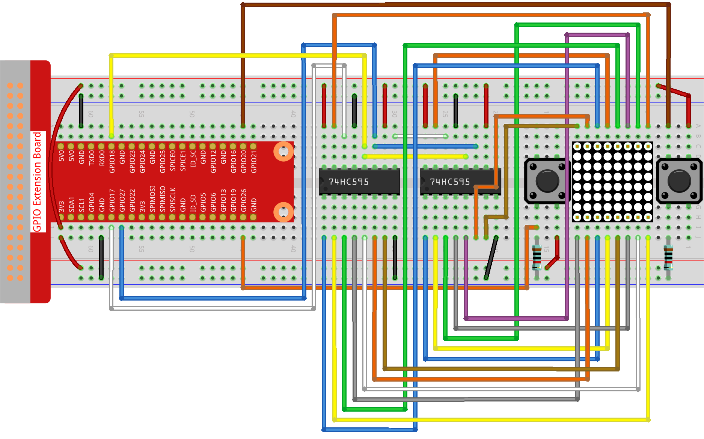

注釈
こんにちは、SunFounderのRaspberry Pi & Arduino & ESP32愛好家コミュニティへようこそ！Facebook上でRaspberry Pi、Arduino、ESP32についてもっと深く掘り下げ、他の愛好家と交流しましょう。
参加する理由は？
エキスパートサポート：コミュニティやチームの助けを借りて、販売後の問題や技術的な課題を解決します。
学び＆共有：ヒントやチュートリアルを交換してスキルを向上させましょう。
独占的なプレビュー：新製品の発表や先行プレビューに早期アクセスしましょう。
特別割引：最新製品の独占割引をお楽しみください。
祭りのプロモーションとギフト：ギフトや祝日のプロモーションに参加しましょう。
👉 私たちと一緒に探索し、創造する準備はできていますか？[ここ]をクリックして今すぐ参加しましょう！
3.1.14 GAME– 逆逆
はじめに
このレッスンでは、面白いゲームデバイスを作ります。その名も「逆逆」です。
ゲーム中、ドットマトリクスはランダムに矢印を表示します。あなたがすることは、限られた時間内に矢印の反対方向のボタンを押すことです。時間切れ、または矢印と同じ方向のボタンを押すと、あなたはアウトです。
このゲームはあなたの逆向き思考を本当に鍛えることができます。さあ、試してみましょうか？
必要なコンポーネント
このプロジェクトには以下のコンポーネントが必要です。

回路図
T-Board Name |
physical |
wiringPi |
BCM |
GPIO17 |
Pin 11 |
0 |
17 |
GPIO18 |
Pin 12 |
1 |
18 |
GPIO27 |
Pin 13 |
2 |
27 |
GPIO20 |
Pin 38 |
28 |
20 |
GPIO26 |
Pin 37 |
25 |
26 |

実験手順
ステップ1: 回路を組み立てる。
ステップ2: コードファイルを開く。
cd ~/davinci-kit-for-raspberry-pi/python-pi5
ステップ3: 実行。
sudo python3 3.1.14_MotionControl.py
プログラムを開始すると、ドットマトリクスに右または左を指す矢印が表示されます。あなたがすることは、限られた時間内に矢印の反対方向のボタンを押すことです。そうするとドットマトリクスに「√」が表示されます。時間切れ、または矢印と同じ方向のボタンを押すと、アウトでドットマトリクスに「x」が表示されます。上下左右の4方向に対応するために、2つの新しいボタンを追加するか、ジョイスティックキーに置き換えてゲームの難易度を上げることもできます。
警告
エラー メッセージ RuntimeError: Cannot determine SOC peripheral base address が表示された場合は、 「gpiozero」が動作しない場合。 を参照してください。
コード
注釈
下記のコードは 変更/リセット/コピー/実行/停止 が可能です。しかし、それを行う前に、 davinci-kit-for-raspberry-pi/python-pi5 のようなソースコードのパスに移動する必要があります。コードを変更した後、直接実行して効果を確認することができます。
#!/usr/bin/env python3
from gpiozero import OutputDevice, Button
import time
import threading
import random
# 74HC595シフトレジスタのGPIOピン
SDI = OutputDevice(17) # シリアルデータ入力
RCLK = OutputDevice(18) # レジスタクロック
SRCLK = OutputDevice(27) # シフトレジスタクロック
# ボタンのGPIOピン
AButtonPin = Button(20) # ボタンA
BButtonPin = Button(26) # ボタンB
# ゲーム変数の初期化
timerPlay = 0
timerCheck = 0
waypoint = "NULL"
stage = "NULL"
# LEDマトリクス表示の矢印グリフ
arrow = {
"right": [0xFF, 0xEF, 0xDF, 0x81, 0xDF, 0xEF, 0xFF, 0xFF],
"left": [0xFF, 0xF7, 0xFB, 0x81, 0xFB, 0xF7, 0xFF, 0xFF]
}
# 正解/誤りのフィードバックグリフ
check = {
"wrong": [0xFF, 0xBB, 0xD7, 0xEF, 0xD7, 0xBB, 0xFF, 0xFF],
"right": [0xFF, 0xFF, 0xF7, 0xEB, 0xDF, 0xBF, 0xFF, 0xFF]
}
def hc595_shift(dat):
""" 74HC595シフトレジスタにデータをシフトします。 """
for i in range(8):
SDI.value = 0x80 & (dat << i)
SRCLK.on()
SRCLK.off()
def display(glyphCode):
""" LEDマトリクスにグリフを表示します。 """
for i in range(0, 8):
hc595_shift(glyphCode[i])
hc595_shift(0x80 >> i)
RCLK.on()
RCLK.off()
def creatGlyph():
""" ゲームの新しいグリフを作成し、プレイタイマーを開始します。 """
global waypoint, stage, timerPlay
waypoint = random.choice(list(arrow.keys()))
stage = "PLAY"
timerPlay = threading.Timer(2.0, timeOut)
timerPlay.start()
def checkPoint(inputKey):
""" プレイヤーの入力をチェックし、ゲームの状態を更新します。 """
global waypoint, stage, timerCheck
if inputKey == "empty" or inputKey == waypoint:
waypoint = "wrong"
else:
waypoint = "right"
timerPlay.cancel()
stage = "CHECK"
timerCheck = threading.Timer(1.0, creatGlyph)
timerCheck.start()
def timeOut():
""" ゲームのタイムアウトシナリオを処理します。 """
checkPoint("empty")
def getKey():
""" ボタン押下を検出し、チェックポイントをトリガーします。 """
if AButtonPin.is_pressed and not BButtonPin.is_pressed:
checkPoint("right")
elif not AButtonPin.is_pressed and BButtonPin.is_pressed:
checkPoint("left")
def main():
""" メインゲームループ。 """
creatGlyph()
while True:
if stage == "PLAY":
display(arrow[waypoint])
getKey()
elif stage == "CHECK":
display(check[waypoint])
def destroy():
""" プログラム終了時にリソースをクリーンアップします。 """
global timerPlay, timerCheck
timerPlay.cancel() # プレイタイマーをキャンセル
timerCheck.cancel() # チェックポイントタイマーをキャンセル
# ゲームを実行し、キーボード割り込みでクリーンな終了を処理
try:
main()
except KeyboardInterrupt:
destroy()
コードの説明
1.1.6 LEDドットマトリクス を基にして、このレッスンでは 2 つのボタンを追加し、面白いゲームデバイスを作ります。ですので、ドットマトリクスにあまり慣れていない場合は、1.1.6 LEDドットマトリックス を参照してください。
必要なライブラリをインポートしてコードを開始します。「gpiozero」はボタンや出力デバイスなどのGPIOピンとのやり取りに使用されます。「time」は遅延を追加するため、「threading」は複数のタスクを同時に実行するため、「random」はプロジェクトでのランダム性を導入するのに役立ちます。
#!/usr/bin/env python3 from gpiozero import OutputDevice, Button import time import threading import random
シフトレジスタ（「SDI」、「RCLK」、「SRCLK」）およびボタン（「AButtonPin」、「BButtonPin」）用のGPIOピンを初期化します。シフトレジスタは、少ないGPIOピンで複数のLEDを制御するために使用され、LEDマトリクス表示に不可欠です。
# 74HC595シフトレジスタのGPIOピン SDI = OutputDevice(17) # シリアルデータ入力 RCLK = OutputDevice(18) # レジスタクロック SRCLK = OutputDevice(27) # シフトレジスタクロック # ボタンのGPIOピン AButtonPin = Button(20) # ボタンA BButtonPin = Button(26) # ボタンB
ゲームロジックに使用される変数、例えばタイマーやゲーム状態指標を初期化します。
# ゲーム変数の初期化 timerPlay = 0 timerCheck = 0 waypoint = "NULL" stage = "NULL"
LEDマトリクスに表示する矢印とフィードバック（正解/誤り）のバイナリパターンを定義します。各配列要素はLEDマトリクスの行を表し、「1」と「0」はそれぞれLEDがオンまたはオフであることを示します。
# LEDマトリクス表示の矢印グリフ arrow = { "right": [0xFF, 0xEF, 0xDF, 0x81, 0xDF, 0xEF, 0xFF, 0xFF], "left": [0xFF, 0xF7, 0xFB, 0x81, 0xFB, 0xF7, 0xFF, 0xFF] } # 正解/誤りのフィードバックグリフ check = { "wrong": [0xFF, 0xBB, 0xD7, 0xEF, 0xD7, 0xBB, 0xFF, 0xFF], "right": [0xFF, 0xFF, 0xF7, 0xEB, 0xDF, 0xBF, 0xFF, 0xFF] }
この関数は1バイトのデータを74HC595シフトレジスタにシフトします。
datバイトの各ビットに対して繰り返し処理を行い、SDIピンを高または低に設定し、SRCLKピンをトグルしてビットをレジスタにシフトします。def hc595_shift(dat): """ 74HC595シフトレジスタにデータをシフトします。 """ for i in range(8): SDI.value = 0x80 & (dat << i) SRCLK.on() SRCLK.off()
この関数はLEDマトリクスにグリフを表示します。
glyphCodeで表されるグリフの各行とその行のアドレスをhc595_shiftを使用してシフトレジスタに送信し、RCLKピンをトグルして表示を更新します。def display(glyphCode): """ LEDマトリクスにグリフを表示します。 """ for i in range(0, 8): hc595_shift(glyphCode[i]) hc595_shift(0x80 >> i) RCLK.on() RCLK.off()
この関数はランダムに
arrow辞書からグリフを選択し、プレイタイマーを開始し、ゲームのステージを「PLAY」に設定します。ゲームでのタイミング制御にはthreading.Timerが使用されます。def creatGlyph(): """ ゲームの新しいグリフを作成し、プレイタイマーを開始します。 """ global waypoint, stage, timerPlay waypoint = random.choice(list(arrow.keys())) stage = "PLAY" timerPlay = threading.Timer(2.0, timeOut) timerPlay.start()
この関数はプレイヤーの入力を現在のグリフと比較します。入力が正しい場合は、waypointを「right」に設定し、そうでない場合は「wrong」に設定します。次に現在のプレイタイマーをキャンセルし、次のグリフのための新しいタイマーを開始します。
def checkPoint(inputKey): """ プレイヤーの入力をチェックし、ゲームの状態を更新します。 """ global waypoint, stage, timerCheck if inputKey == "empty" or inputKey == waypoint: waypoint = "wrong" else: waypoint = "right" timerPlay.cancel() stage = "CHECK" timerCheck = threading.Timer(1.0, creatGlyph) timerCheck.start()
この関数はゲームがタイムアウトしたときに呼び出されます。「empty」を引数として
checkPointを呼び出し、時間内にボタンが押されなかったことを示します。def timeOut(): """ ゲームのタイムアウトシナリオを処理します。 """ checkPoint("empty")
この関数はボタンの状態を確認します。「AButtonPin」が押されていて「BButtonPin」が押されていない場合は、「right」として
checkPointを呼び出します。逆に「BButtonPin」が押されていて「AButtonPin」が押されていない場合は、「left」としてcheckPointを呼び出します。def getKey(): """ ボタン押下を検出し、チェックポイントをトリガーします。 """ if AButtonPin.is_pressed and not BButtonPin.is_pressed: checkPoint("right") elif not AButtonPin.is_pressed and BButtonPin.is_pressed: checkPoint("left")
main関数はゲームの流れを制御します。グリフを作成して開始し、継続的にゲームのステージを確認します。"PLAY"ステージでは、現在のグリフを表示し、ボタン押下をチェックします。"CHECK"ステージでは、プレイヤーのアクションに基づいてフィードバックを表示します。def main(): """ メインゲームループ。 """ creatGlyph() while True: if stage == "PLAY": display(arrow[waypoint]) getKey() elif stage == "CHECK": display(check[waypoint])
この関数はプログラムが終了する際に実行中のタイマーをキャンセルし、クリーンなシャットダウンを保証します。
def destroy(): """ プログラム終了時にリソースをクリーンアップします。 """ global timerPlay, timerCheck timerPlay.cancel() # プレイタイマーをキャンセル timerCheck.cancel() # チェックポイントタイマーをキャンセル
ゲームは
tryブロックで実行されます。KeyboardInterrupt（Ctrl+Cを押すなど）が発生した場合、例外をキャッチし、destroyを呼び出して終了前にクリーンアップします。# ゲームを実行し、キーボード割り込みでクリーンな終了を処理 try: main() except KeyboardInterrupt: destroy()